CS 180: Computer Vision & Computational Photography, Fall 2024
Project 3: Face Morphing and Modelling a Photo Collection
Calvin Vu
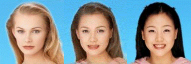
Overview
In this assignment we will produce a "morph" animation of our faces into someone else's face, compute the mean of a population of faces and extrapolate from a population mean to create a caricature of ourselves.
Section I: Defining Correspondences
First, if we want to be able to morph two images together, we need to create a mapping between the two images, specifically we need to extract a list of coordinates that represent the facial landmarks that are the same between both
the images such as eyes, nose and mouth. Fortunately, a previous student created a handy tool that will allow us to easily generate a correspondence map between two images. The link to the tool is
here.
Now that we have our list of correspondences, we now need to compute a triangulation between all of these points. The Delaunay triangulation algorithm is a good choice since it does not produce overly skinny triangles. We only want to
compute this triangulation once since we want it to be consistent throughout the morph. This means we should compute it on an average image or any image in between. We can use Scipy's Delaunay function on our list of correspondences
to get the triangulation. For the sake of visualization, lets compute this
triangulation on both of our chosen images.
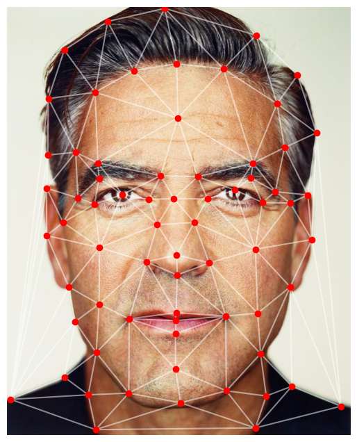
Delaunay Triangulation on Image 1
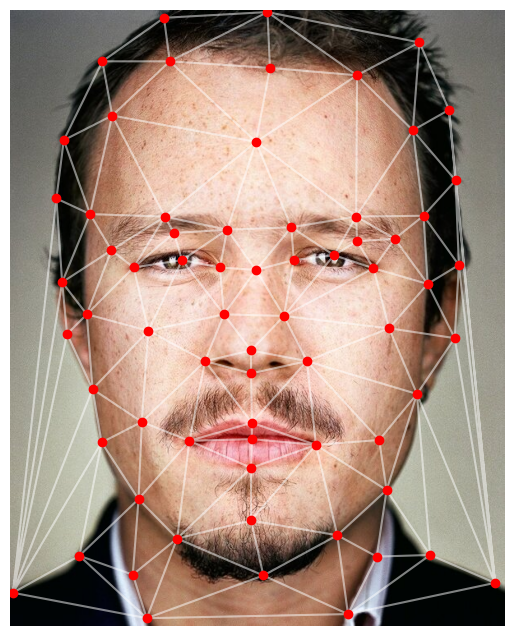
Delaunay Triangulation on Image 2
Section II: Computing the "Mid-way Face"
Like previously mentioned, we do not want to compute multiple triangulations so for this section, lets
take the average of the two images. After computing the Delaunay triangulation on the average of the two images,
we need to compute an affine transform to change the triangulation of both images. We can iterate through
the triangles in the triangulation and for each index or triangle, we take the current index of the average
shape, correpsondence for image 1, and the correpsondence for image 2. Using these, we can then compute
the affine transform but that particular point on image 1 and image 2 using the corresponding point on the
averaged image. We use these points to create two matrices allowing us to use Numpy's least squares function to
solve the matrix equation.
After, using the image dimensions we can create an output array for our output image. Then for each triangle
again, we will get the pixel location of our output image that is in the averaged image using the previously
computed affine transformations. Then since we need to blend the images, we can use a bilinear interpolation
to get the correct color values from the input images. In order to blend the color values together, we can define a
warp factor to calculate: colors = (1 - warp_frac) * image1 + warp_frac * image2. Since we want the midpoint,
we can use a warp factor of 0.5.
Image 1
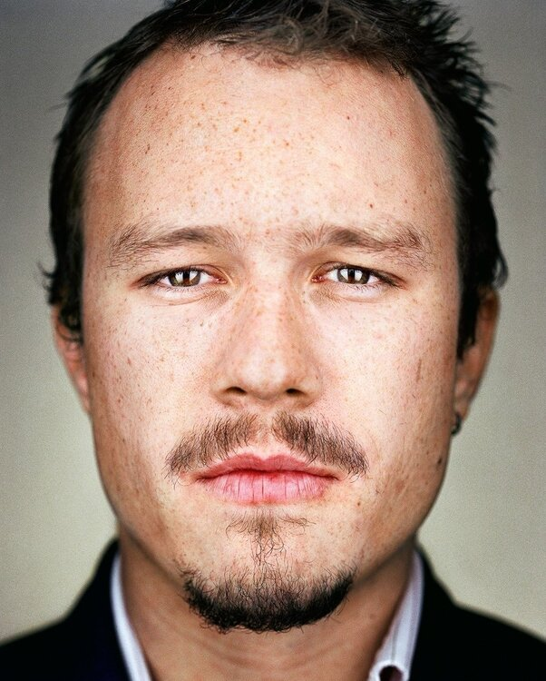
Image 2
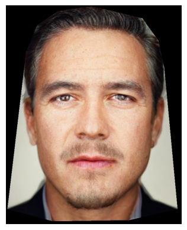
Mid-way face
Section III: The Morph Sequence
From the previous section, we now have one iteration of the morph function we want only for one frame. To generate
a morph sequence we can just reuse the previous alogrithm, but throughout a range of images or frames, rather than just one
while adjusting some parameters. In addition to the warp factor, we now need a dissolve factor. Rather than
using an average image now, we need to compute an intermediary image that is different for every iteration. First,
lets define how many frames we want in our morph sequence. For each frame, our warp factor will be the current
frame index divided by the number of frames minus one. The dissolve factor will be the warp factor. Then, to
get the intermidiary image, we can find (1 - warp) * img1_correspondences + warp_frac * im2_correspondences.
Then we do this for however many frames we define and collect each frame into a sequence of frames which will be
our morph sequence.
Morph Sequence
Section IV: The "Mean face" of a population
In this section, we will take a dataset of faces with keypoints to compute an average face. First, lets collect
list of facial keypoints for each image and take the average of these keypoints to get an average face shape.
To warp one face to the average shape, we can do what I have accomplished before with morphing. First, compute
a triangulation on the average face shape, compute the affine transformation using the coordinates from the
average face shape and the face you want to warp, process each triangle and then map the pixels from the input
image to the output image. With this, we can warp any face to the average face shape and the average face
shape to any shape by picking what we define as the "average" shape to calculate our triangulation on. To get the
actual average face rather than just one warped face, we have to morph every face in the dataset to the average
face shape of that dataset then average out those morphed faces. Morphing my face onto the average and the average onto
my face generated some pretty goofy results which may be a result of the correpsondence points I picked out for my own face as
well as the difference in cropping and alignment.
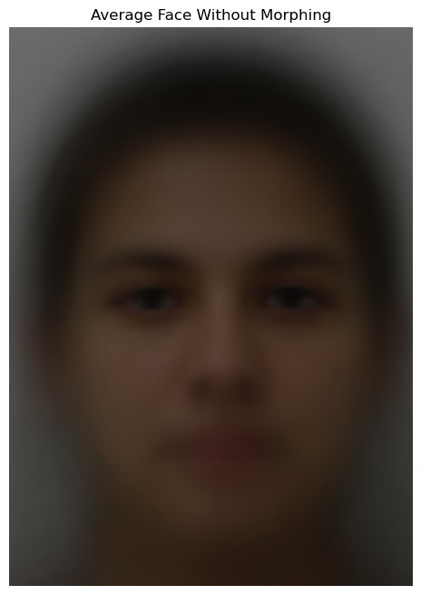
Average of faces, no morphing.
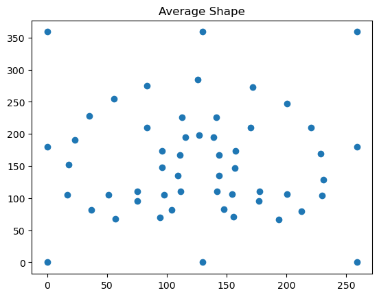
Plot of average face shape.
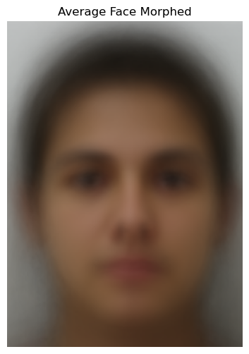
Average of faces, morphed.
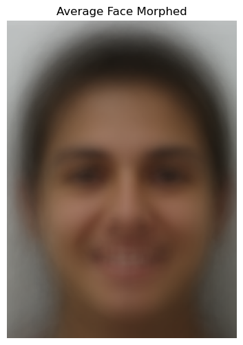
Average of faces, morphed.
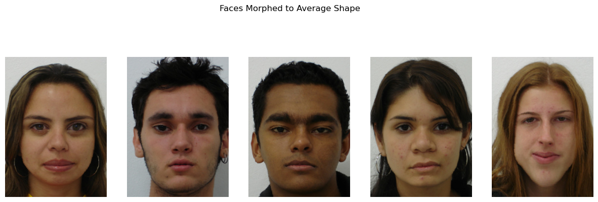
Some examples of faces from the dataset morphed to average face shape.
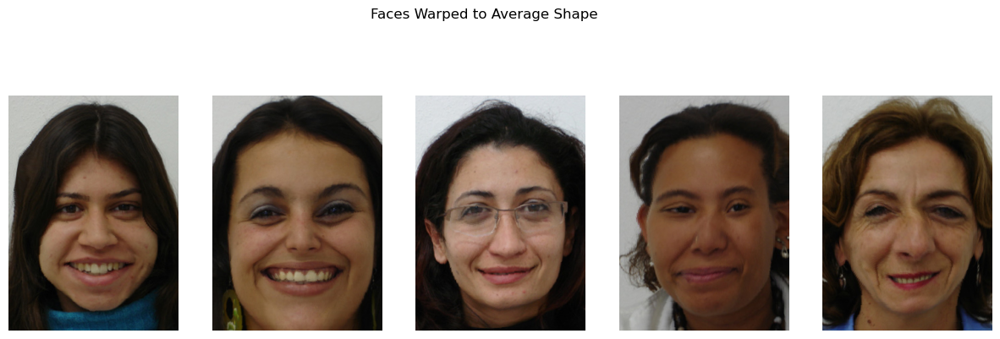
Some examples of faces from the dataset morphed to average face shape.
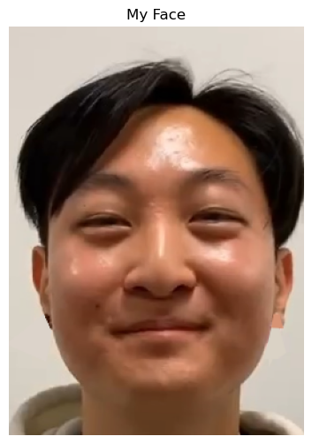
My Face
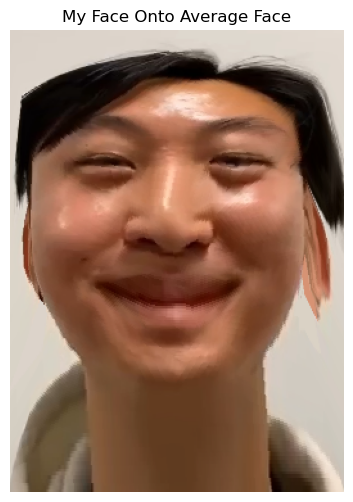
My Face On Average Face
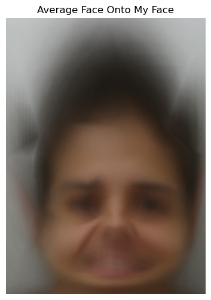
Average Face On My Face
Section V: Caricatures: Extrapolating from the Mean
In this section, using the population mean dataset, we can create a caricature of our faces by extrapolating
the features from the population mean. We can define an alpha value that will determine how much of the features
from the population mean will be exaggerated. An alpha of 1 and greater means it is close to my face and features of the
caricature are not exaggerated as much. Likewise, an alpha of less than 1 will exaggerate the features of the
caricature provided by the population mean.
Previously, if we wanted to get the correpsondence points between two images, we would have to use a GUI
and manually pick out the points of interest one by one. As we can see by this method, if we want to
experiment and morph with many images, this would be extremely time-consuming. Fortunately, we can use the
python library Dlib that has a facial landmark recognition program that can take an image and identify 68
keypoints for facial features such as eyes, nose, mouth, etc.
My Face
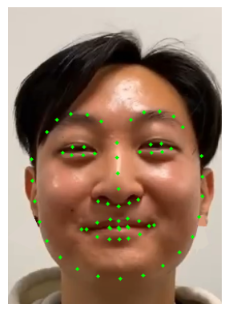
Generated Facial Keypoints
Section VI-II: Extras - Morphing Sequence
Now that we can automate the process of creating keypoints for faces we want to morph, lets take advantage
of this and create a much longer morph sequence of many different faces and angles! Here is a gif/video
of me and some friends.